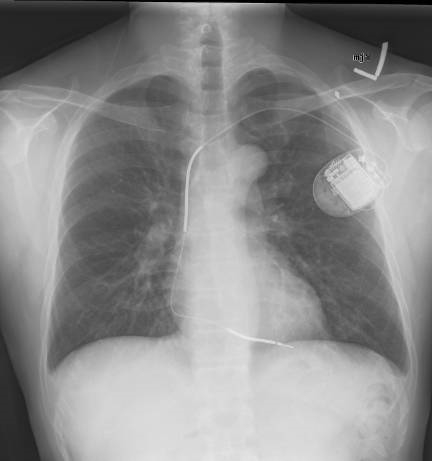
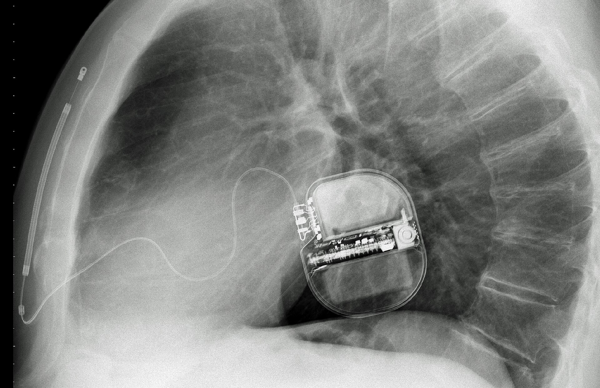

處置
ICD ｜ 植入式心律去顫器 · Implantable Cardioverter-Defibrillator 筆記更新 2026-07-26· 整理狀態：可用
加入閱讀清單 其他名稱 4 ICD · 植入式心律去顫器 · Implantable Cardioverter-Defibrillator · 體內去顫器
30 秒行動卡
最該記的適應症 ：次級預防 ＝曾發生非可逆原因的 VT／VF 或心因性昏厥｜初級預防 ＝LVEF ≤30–35% 的心衰竭，且已過等待期
做之前一定要確認 ：① 原因可不可逆 （可逆就不放）② 等待期過了沒 （MI 後 ≥40 天、血管再灌流後 ≥90 天）③ 預期存活與生活品質是否 ≥1 年
絕對不可 ：對可逆原因造成的 VT／VF 植入 ICD
原理與目的
flowchart TD
A["心室頻脈<br/>或心室顫動"] --> B["裝置偵測心率<br/>與訊號型態"]
B --> C["抗頻脈節律<br/>ATP 無痛終止"]
B --> D["同步整流<br/>或去顫電擊"]
C --> E["恢復竇性節律"]
D --> E
E --> F["避免這次猝死"]
classDef key fill:#1b5e20,stroke:#0b3d0b,color:#fff,font-weight:bold
class F key
筆記中的流程與關係 與 Test 的分界
ICD 會記錄 心律事件（這部分是取得資訊），但植入它的目的是改變病人的結局 ，所以歸 Intervention。
它記錄下來的心電圖資料在診斷上很有價值——心室性心律不整可透過體表心電圖、植入裝置紀錄、或電生理檢查誘發 三條路確立診斷。
適應症 Indications
類別
適應症
判斷閾值／時機
次級預防 （已發生過）VT／VF 造成的心跳停止存活者、血行動力不穩的持續性 VT、不明原因昏厥且電生理檢查誘發出 VT
前提：非可逆原因
初級預防 （尚未發生）缺血性心肌病變 LVEF ≤30–35% ＋ NYHA II–III
心肌梗塞後 ≥40 天、血管再灌流後 ≥90 天
非缺血性擴張型心肌病變 LVEF ≤35% ＋ NYHA II–III
需已接受 ≥3 個月最佳藥物治療
遺傳性心律不整：長 QT 症候群、Brugada syndrome、兒茶酚胺敏感性多形性 VT
依各症候群風險分層
ARVC （右心室心肌病變）依風險分層
高風險 HCM
見 HCM 猝死危險因子清單
修補過的先天性心臟病出現自發性 VT 例如法洛氏四重症術後——疤痕相關折返；風險因子含 QRS ＞180 ms 、5 歲後才修補、右心血行動力異常
術前準備與評估
項目
內容
必查檢驗
LVEF（超音波或核醫）、電解質（尤其鉀、鎂）、腎功能、CBC↗
一定要先排除
可逆原因 ：急性心肌缺血、電解質異常、藥物（延長 QT 者）、甲狀腺功能異常
影像／定位
胸部 X 光；評估靜脈通路
同意書與風險說明
手術風險、不適當放電的可能 、日後更換電池、開車與職業限制、末期時的關閉討論
停藥
依抗凝方案調整；多數情況 warfarin 可不中斷，DOAC 常暫停 1–2 次劑量
操作概要
局部麻醉，在左（或右）鎖骨下做囊袋
經鎖骨下或頭靜脈把導線送入右心室（必要時加右心房、冠狀竇導線）
測試導線的感知與起搏閾值
接上脈衝產生器、置入囊袋、縫合
術後程式設定與（部分中心）去顫閾值測試

經靜脈 ICD：脈衝產生器位於左鎖骨下囊袋，導線經中心靜脈進入右心，末端固定在右心室心尖。Source: Wikimedia Commons — Implantable cardioverter defibrillator chest X-ray （CC BY 3.0）。

S-ICD 側位片：產生器在左側胸壁皮下，導線沿胸骨旁走行，完全不進入血管或心腔；與上圖的 transvenous lead 形成關鍵對照。Source: Wikimedia Commons — Subcutaneous ICD XRay , PaulT（授權條款見來源頁）。
併發症 Complications
併發症
何時出現
怎麼發現
怎麼處理
不適當放電 任何時候
病人主訴被電但當時無症狀；裝置紀錄顯示 Afib 快速心室反應或訊號雜訊
重新程式設定、控制心室率、必要時換導線
囊袋血腫
術後數日
局部腫脹瘀青
壓迫；避免不必要的抗凝中斷
感染／心內膜炎 術後數週至數年
囊袋紅腫、發燒、菌血症
整套系統移除 ＋抗生素——只給抗生素幾乎必復發
導線移位或斷裂
早期或多年後
感知／起搏異常、不適當放電
更換導線
氣胸、心臟穿孔
術中至術後 24 小時
胸痛、呼吸困難、低血壓
影像確認；引流或外科處置
電風暴 （24 小時內 ≥3 次放電）任何時候
反覆放電
緊急處理 ：找誘因、抗心律不整藥、鎮靜、必要時電燒
術後監測
要盯的
頻率
異常閾值
傷口與囊袋
每日至出院、術後 1–2 週回診
紅、熱、滲液、張力性腫脹
裝置參數（感知、閾值、阻抗）
出院前、之後每 3–12 個月或遠距監測
阻抗突變提示導線問題
放電事件 每次回診／遠距警示
任何一次適當放電都要當成臨床事件處理
電池餘量
每次回診
到達 ERI 即安排更換
這個處置改善了什麼、沒改善什麼
這一節是 ICD 考題最集中的地方。
問題
答案
降低心律不整性猝死 ？
是 ——這是它唯一直接做到的事
降低整體死亡率 ？
在符合適應症的族群，是 （MADIT-II ↓31%、SCD-HeFT ↓23%）
改善心衰竭 本身？
否 ——不減少心衰竭惡化與住院
改善症狀或運動耐受？
否
「ICD 不降低整體死亡率」這句話講得太滿
在符合適應症的族群整體死亡率是 會下降的。沒有 整體死亡率好處的是三個特定情境：
① 心肌梗塞後 40 天內 （DINAMIT、IRIS）
② 現代藥物治療下的非缺血性擴張型心肌症 （DANISH 2016）
③ 可逆原因 造成的 VT／VF
這也正好解釋了那兩個等待期為什麼存在。
禁忌與陷阱
絕對不可
情境
絕對不可
為什麼
該做什麼
VT／VF 由可逆原因 造成（急性缺血、低血鉀、藥物延長 QT、電解質異常）
直接植入 ICD
矯正原因後不會再發，白挨一刀還帶終身併發症
矯正原因、觀察；仍反覆發作再評估
心肌梗塞後 40 天內 植入 ICD 作初級預防
無存活好處；EF 可能自行恢復
等待期內用穿戴式去顫背心 過渡
裝置感染
只給抗生素而不移除
生物膜使感染幾乎必然復發
整套系統移除 ＋足療程抗生素
預期存活 ＜1 年且生活品質不佳
植入 ICD
只是改變死亡方式
安寧共照；已植入者討論關閉去顫功能
任何心室性心律不整發作當下
忙著分辨心律型態而延誤處置
初始治療目標是穩定血行動力學 不穩定 → 立即電擊整流
常見錯誤
把「ICD 降低心衰竭風險」當正確——不降低 。
反過來把「ICD 完全不降低整體死亡率」當正確——在適應症族群是會降低的 ，兩個方向都能出題。
忘記 40 天／90 天 等待期，或把兩個數字對調。
對可逆原因的 VT／VF 植入 ICD。
把 ICD 與心律調節器（pacemaker） 混為一談：前者治過快、後者治過慢；ICD 內建起搏功能，反之不然。
相關連結
SOURCE & CONTEXT
來源與原始筆記 113-1 醫學(三) 14、113-2 醫學(三) 10 延伸；MADIT-II、SCD-HeFT、DANISH、DINAMIT 試驗；AHA/ACC 心室性心律不整與猝死指引
下載這篇 Markdown ↗ 網站保留原筆記的內容與整理狀態。